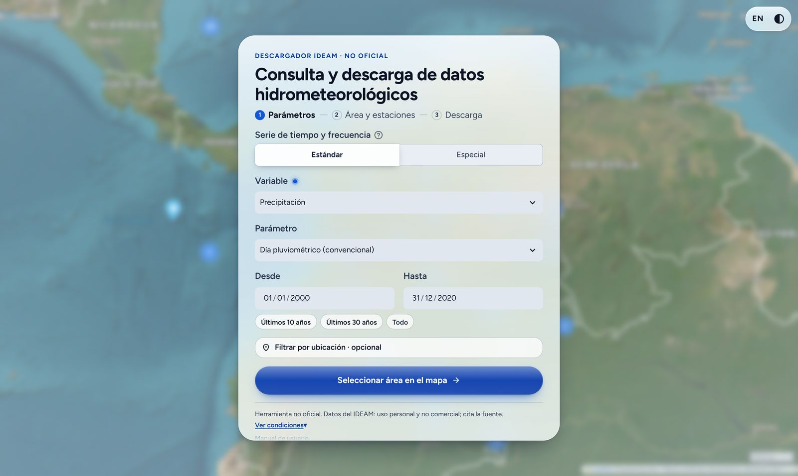
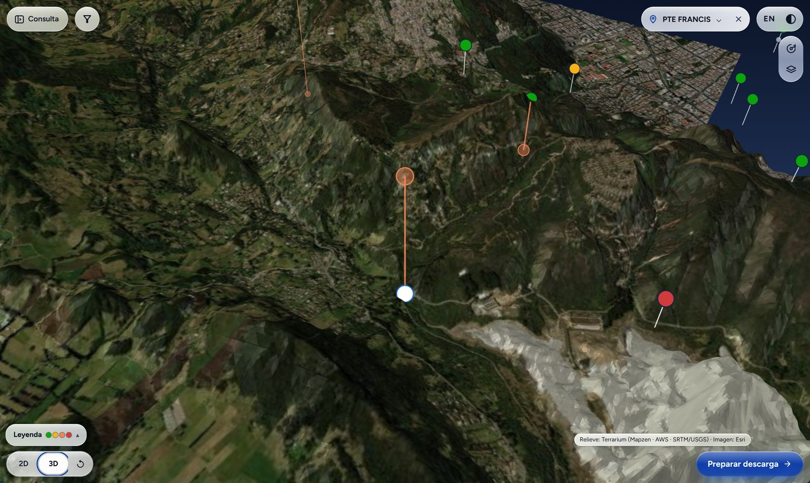
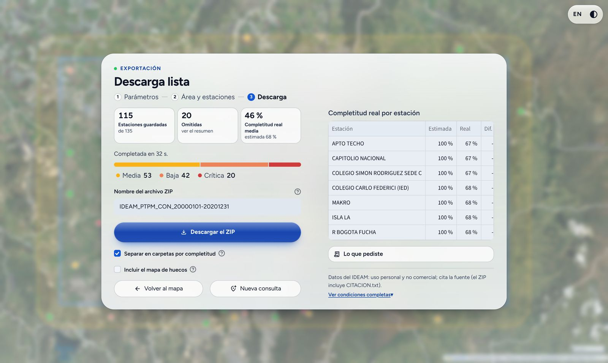
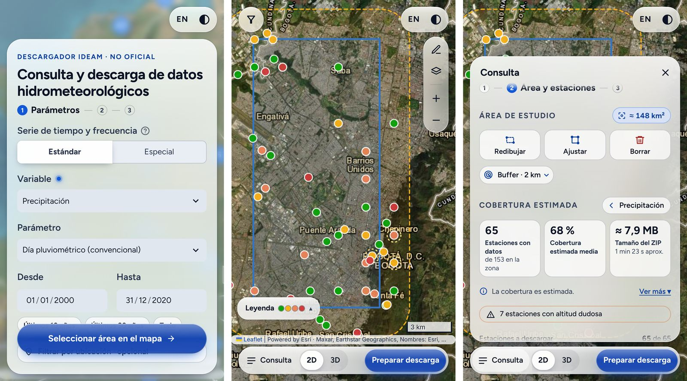

Lo que el Descargador aporta frente al portal DHIME
El portal DHIME del IDEAM es la fuente oficial de las series de la red nacional de estaciones, y es también la fuente de esta herramienta. El portal está concebido para consultas puntuales. Un estudio, un informe o un modelo suele requerir decenas de estaciones y décadas de registros de precipitación, temperatura, humedad, brillo solar, viento, evaporación, niveles, caudales o cualquier otra variable disponible. La siguiente tabla compara ambas formas de trabajo a partir del manual de usuario del portal y de sus rangos de descarga vigentes.
| Signo | Necesidad | En el portal DHIME | En el Descargador IDEAM |
|---|---|---|---|
| Ubicar las estaciones de una zona | La selección se hace por departamento y municipio, marcando cada estación en una tabla. El portal no permite delimitar un área de estudio. Su mapa muestra a la vez todas las estaciones de la red, cada una con su símbolo, pero son tantas en la misma vista que resulta difícil identificar las que interesan. | El área de estudio se define sobre el mapa: un rectángulo de cualquier tamaño o el contorno exacto de la zona, cargado desde un archivo Shapefile, GeoJSON, KML/KMZ o GeoPackage. Una franja opcional de 0,5 a 15 km incorpora las estaciones vecinas. También es posible seleccionar por departamento y municipio. | |
| Depurar las estaciones útiles | La tabla de cada municipio presenta sus estaciones con la fecha inicial, la fecha final y la cantidad probable de datos. La revisión se hace estación por estación. | La depuración se reduce a mover un control. Al elegir la variable, el mapa conserva únicamente las estaciones que la miden y las colorea según su cobertura del periodo; un filtro deslizante de cobertura deja en segundos las que cumplen el criterio. Las estaciones sin registros en el periodo, que suelen ser la mayoría, se identifican y se descartan con certeza. | |
| Consultar muchas estaciones | Cada consulta admite un número máximo de estaciones y de series, que depende de la frecuencia. En series anuales, por ejemplo, el máximo es de 50 estaciones. | Todas las estaciones del área en una sola solicitud, hasta 1.500. La herramienta la reparte en las consultas que el portal admite. | |
| Consultar periodos largos | Cada consulta admite un máximo de años: 50 en series anuales y mensuales, 30 en diarias, 10 en horarias y 30 días en las series por minutos. El periodo definido se mantiene fijo para todas las consultas de una misma descarga. | Se solicita el periodo completo. La herramienta lo divide en los tramos que admite el portal, los consulta todos y entrega la serie unida. | |
| Recibir archivos listos para el análisis | Un archivo ZIP con un Excel o un CSV por estación, a elección. Cuando el periodo supera el límite se requieren varias descargas, y la unión de los archivos queda a cargo del usuario. | Un Excel por estación con el formato original del IDEAM, con todos los tramos unidos en orden cronológico y nombrado con la estación, su código y el parámetro. | |
| Conocer los datos de cada estación | La herramienta Identificar muestra los atributos de una estación al seleccionarla en el mapa, entre ellos su altitud. Con todas las estaciones de la red en la misma vista, ubicar la que interesa toma tiempo. | Cada estación que mide la variable elegida tiene una ficha sobre el mapa: código, tipo, altitud, cobertura del periodo, años de la serie, variables que registra, subred y códigos alternos. | |
| Anticipar lo que se va a recibir | La tabla informa la cantidad probable de datos de cada estación. El mapa no se actualiza al elegir la variable, y las estaciones sin registros en el periodo no generan archivo, lo que solo se conoce después de descargar. | Antes de descargar se conoce la cobertura estimada de cada estación, representada en el mapa con cuatro colores, la cobertura media del conjunto, el tamaño del ZIP y el tiempo aproximado de la descarga. | |
| Verificar lo que se recibió | El portal no entrega un balance de los datos recibidos; el conteo queda a cargo del usuario. | La completitud real de cada estación, contrastada con la estimada; un mapa de huecos por año o por mes; y, de forma opcional, una tabla consolidada con todas las estaciones. | |
| Conocer el nivel de aprobación del dato | Se informa dato a dato dentro de cada archivo. | Se conserva dato a dato y, además, se resume por estación: qué porcentaje es definitivo, está en revisión o es preliminar. | |
| Organizar la entrega | No disponible. | El ZIP lleva el nombre que se le asigne y, de forma opcional, agrupa las estaciones en carpetas según su completitud real. | |
| Revisar las altitudes del catálogo | No disponible. | La herramienta contrasta la altitud del catálogo con un modelo de elevación y señala las estaciones cuya diferencia supera los 200 m. En la vista 3D, un haz naranja muestra la magnitud del error. | |
| Visualizar el relieve de la zona | Una galería de mapas base en dos dimensiones. | Además de los mapas base, el relieve en tres dimensiones con imagen satelital, mapa topográfico o coloreado por altitud. | |
| Ajustar la selección | Las estaciones se marcan en la tabla de cada municipio. | Todas las estaciones del área llegan seleccionadas. Una lista con casillas y buscador permite excluir o reincorporar las que se requiera. | |
| Citar la fuente | Los términos de uso se aceptan en cada descarga; la cita la elabora el usuario. | El ZIP incluye la cita redactada conforme a los términos de uso del IDEAM, con la fecha real de la descarga. | |
| Continuar tras una interrupción | El manual del portal no contempla reanudar una descarga. | La descarga puede detenerse en cualquier momento conservando lo ya guardado, y continúa si la página se recarga o la conexión se interrumpe por un momento. | |
| Obtener series especiales | Decadal y multianual. | Las mismas series, con los nombres y cálculos del portal. La herramienta advierte de antemano cuando el periodo solicitado excede lo que el IDEAM admite. |
En el portal, el trabajo comienza por revisar la tabla de cada municipio y marcar las estaciones con registros. Como las series horarias admiten 10 años por consulta, el proceso se repite tres veces, una por década, y después hay que unir los archivos de cada estación. Con el Descargador se delimita el área, se ajusta el filtro de cobertura y se realiza una sola descarga: cada estación llega en un único Excel con sus 30 años, acompañada de un resumen de lo recibido y de la cita de la fuente.
Requisitos
- Un navegador actualizado y conexión a internet. La herramienta no requiere instalación y funciona en computador, tableta y celular.
- La clave de acceso asignada. Se solicita una sola vez en cada navegador; a partir de ahí, el acceso es directo. Para salir, basta con elegir Cerrar sesión en el menú de ajustes.
- La zona de interés. Puede ser un municipio, una cuenca, un páramo, un corredor vial o el área de un proyecto. Si está delimitada en un archivo SIG, se carga directamente; de lo contrario, se traza sobre el mapa o se seleccionan las estaciones por departamento y municipio.
El trabajo se resuelve en tres pasos, que la aplicación indica en todo momento en la parte superior de la pantalla:
Parámetros
La variable, el parámetro y el periodo de la consulta.
Área y estaciones
La delimitación del área y la revisión de las estaciones que contiene.
Descarga
La consulta al IDEAM y la entrega de un ZIP organizado.
Si la aplicación lleva un tiempo sin uso, la primera carga puede tardar hasta un minuto mientras el servidor se reactiva. Las siguientes son inmediatas.
La consulta: variable, parámetro y periodo
La aplicación abre con la tarjeta de consulta. Sus listas provienen del portal del IDEAM y conservan los mismos nombres, de modo que están disponibles todas sus variables: precipitación, temperatura, humedad relativa, brillo solar, viento, evaporación, nivel y caudal, entre otras.

- Serie de tiempo y frecuencia. Estándar reúne las series diarias, mensuales, anuales, horarias y de alta frecuencia. Especial reúne los cálculos decadales y multianuales del IDEAM, descritos en la serie especial.
- Variable y parámetro. Cada variable ofrece sus propios parámetros. En precipitación, por ejemplo, están Día pluviométrico (convencional), Precipitación total mensual y Precipitación total anual; en temperatura, las máximas, las mínimas y las medias. Las listas admiten búsqueda por texto. El punto situado junto a «Variable» se ilumina en azul cuando la lista del IDEAM ha terminado de cargar.
- Desde y Hasta, en formato día/mes/año. Los accesos Últimos 10 años, Últimos 30 años y Todo completan el periodo de inmediato.
- El botón Seleccionar área en el mapa conduce al siguiente paso.
Los límites del portal no restringen el periodo que se puede solicitar: la aplicación lo divide en los tramos que admite el IDEAM y entrega la serie unida en un solo Excel por estación.
| Frecuencia de la serie | Periodo máximo |
|---|---|
| Mensual y anual | 50 años |
| Diaria | 30 años |
| Horaria | 10 años |
| Cada 2, 5 o 10 minutos y minutal | 30 días |
Selección por ubicación
Como alternativa al área, las estaciones pueden elegirse por división administrativa. El desplegable Filtrar por ubicación · opcional, al final de la tarjeta, permite indicar el departamento, el municipio y, si se desea, estaciones específicas por nombre o código. Cada estación se presenta con los años de su serie, por ejemplo ASTILLEROS [27011110] · 1991–2026. El botón principal pasa a decir Ver N estaciones en el mapa, y el mapa se abre únicamente con esa selección. Para volver al trabajo por área, basta con pulsar Quitar filtro en el panel o delimitar un área.
La serie especial
Corresponde a los cálculos que el IDEAM efectúa sobre una serie base. Cada parámetro indica su cálculo y su código, tal como aparecen en el portal: Día pluviométrico |SUM [PTPM_CON].
- Decadal. Un valor por cada década del mes (días 1 a 10, 11 a 20 y 21 al último día), es decir, 36 por año.
SUMacumula,MAXyMINtoman los extremos yAVGpromedia. Los tramos se cortan a fin de mes para que ninguna década quede dividida. - Multianual. 36 filas por estación: el mínimo, la media y el máximo de cada mes para todo el periodo. El IDEAM lo calcula en una sola operación, por lo que el periodo no puede exceder el límite de la serie base; si lo excede, la tarjeta solicita acortarlo.
El IDEAM entrega estas series en bloques de 30 días: diez años equivalen a 120 consultas por estación, y cada Excel puede alcanzar cientos de miles de filas. Se recomienda usarlas con periodos cortos y pocas estaciones. Si el periodo superara el millón de filas por estación, que es el máximo de Excel, la tarjeta solicita acortarlo.
El área de estudio
El mapa ocupa toda la pantalla. Las opciones para delimitar el área se encuentran en el lápiz de la barra de herramientas, en la esquina superior derecha.

Dibujar un rectángulo
De cualquier tamaño. Basta con acercar el mapa a la zona, elegir la opción y arrastrar de una esquina a la opuesta.
Usar el área visible
El área corresponde a lo que muestra la pantalla. Se habilita con el mapa cercano (nivel de zoom 10 o superior).
Subir un archivo
El contorno exacto de la zona, con cualquier forma. Es la opción más precisa.
Al definir el área, un barrido la recorre mientras la aplicación localiza las estaciones, que aparecen de norte a sur. El panel informa la superficie en km² y ofrece tres acciones: Redibujar, Ajustar, que permite mover las esquinas y confirmar con Guardar, y Borrar. La aplicación trabaja con un área a la vez.
Formatos de archivo
| Formato | Contenido |
|---|---|
| Shapefile en ZIP | Un archivo .zip con el .shp, el .shx, el .dbf y el .prj. Es la opción recomendada. |
| Shapefile suelto | Los archivos .shp, .shx y .dbf seleccionados a la vez, junto con el .prj si está disponible. |
| GeoJSON | Un archivo .geojson o .json. |
| KML / KMZ | El archivo exportado desde Google Earth. |
| GeoPackage | Un archivo .gpkg. Si contiene varias capas, se usa la de polígonos. |
Con Subir un archivo, el archivo se arrastra al recuadro y, cuando aparece Archivo válido, se confirma con Usar esta área. El archivo debe contener polígonos y declarar su sistema de coordenadas. Si falta el .prj y las coordenadas están en metros, la aplicación lo advierte en lugar de situar el área en una posición incorrecta.
El buffer: estaciones vecinas
Las estaciones próximas al límite de la zona suelen ser necesarias para interpolar, comparar o completar series. El control Buffer · 2 km del panel añade una franja de 0,5 a 15 km alrededor del área, que el mapa representa con una línea punteada de color ámbar (naranja en la vista 3D). Cada estación queda clasificada como en el área o en el buffer, y esa clasificación se conserva en el resumen del ZIP. Para prescindir de la franja, se desactiva Incluir estaciones cercanas.
Revisión de las estaciones antes de descargar
Una vez delimitada el área, el panel Consulta anticipa el resultado antes de solicitar un solo archivo. En el computador se presenta cerrado para dejar el mapa a la vista; se abre con el botón Consulta, en la esquina superior izquierda.
Las tres cifras del panel
Estaciones con datos
Cuántas estaciones del área tienen la serie elegida en el periodo, frente al total de estaciones de la zona.
Cobertura estimada media
La proporción del periodo que cubren, en promedio, los registros de las estaciones seleccionadas.
Tamaño del ZIP
El peso aproximado de la descarga y su duración estimada.
Significado de los colores
Cada estación se representa con el color de su cobertura estimada del periodo:
| Halo punteado. La altitud del catálogo no coincide con el terreno (ver revisión de altitudes). | |
| Punto hueco con borde punteado. Estación excluida de la descarga. | |
| Anillo azul. Estación seleccionada. | |
| Sin serie. Las estaciones que no miden la variable permanecen ocultas para no saturar el mapa; se muestran con Mostrar las sin serie. |
El botón Leyenda, en la esquina inferior izquierda, resume estos signos. El botón de capas cambia el mapa base: satélite con nombres, satélite, relieve, calles o satélite nocturno.
El filtro de cobertura
Filtrar estaciones, en la esquina superior izquierda del mapa, abre el control deslizante Cobertura del periodo. Al fijar un rango, por ejemplo de 50 a 100 %, el mapa y la descarga conservan únicamente las estaciones que lo cumplen. La depuración de cientos de estaciones, que de otro modo exigiría revisarlas una por una, se resuelve con un solo ajuste.
La lista de estaciones
- Reúne todas las estaciones descargables, ordenadas de mayor a menor cobertura, con su código, los años de su serie y su porcentaje. Cuando son más de ocho, incorpora un buscador por nombre o código.
- Las estaciones marcadas son las que se descargan. Todas llegan marcadas; basta desmarcar las que no se requieran. La casilla superior marca o desmarca el conjunto.
- Al hacer clic en una estación de la lista, el mapa se desplaza hasta ella.
- El nombre de la variable, en la parte superior del panel, devuelve al paso 1 para modificar la variable o el periodo sin perder el área.
La ficha de la estación
Al hacer clic en una estación aparece una etiqueta con su nombre; al pulsarla se despliega la ficha. Su contenido proviene del catálogo del IDEAM y está disponible de inmediato, sin descargar ningún archivo.

- Identificación: el código, el tipo de estación, su ubicación en el área o en el buffer y, si ya no opera, el año de suspensión.
- Tres cifras: altitud, cobertura del periodo y años de la serie.
- Información complementaria, cuando el IDEAM la publica: Mide, las variables que registra la estación; Subred, la red regional a la que pertenece; y Alias, otros códigos con los que el IDEAM identifica la misma estación, útiles para reconstruir su historial completo.
- Altitud dudosa · Ver detalles explica el caso cuando la altitud del catálogo no coincide con el terreno.
- Incluir en la descarga excluye o reincorpora la estación, y Ver en 3D la muestra sobre el relieve.
Vista 3D y revisión de altitudes
El selector 2D 3D, en la esquina inferior izquierda, presenta el área sobre el relieve real, con una exageración vertical de dos veces para que los desniveles se aprecien con claridad. Cada estación se apoya sobre el terreno.

Altitud dudosa
La aplicación contrasta la altitud que registra el catálogo del IDEAM con la elevación del terreno en las coordenadas de la estación, tomada de un modelo digital de elevación. Cuando la diferencia supera los 200 m, la estación queda señalada:
- en el mapa 2D, con un halo punteado;
- en el panel, con el aviso N estaciones con altitud dudosa, que abre una tabla con la altitud del catálogo, la del terreno y la diferencia;
- en la vista 3D, con un haz naranja que une la estación con la altitud del catálogo, incluso cuando esta queda por debajo del terreno.
Si la altitud del catálogo no existe en ningún punto de la zona, el error corresponde a la altitud. Si existe en las cercanías, pero no en el punto exacto, es posible que la altitud sea correcta y el error esté en las coordenadas. La aplicación indica cuál de los dos casos aplica. La señal no afecta la descarga: es información para el análisis.
Texturas del relieve
El botón de capas ofrece tres representaciones del relieve: imagen satelital, mapa topográfico y coloreado por altitud. Esta última pinta el terreno por franjas de elevación y facilita reconocer a qué altura se encuentra cada estación.
Navegación en 3D
- En el computador: arrastrar para desplazarse, clic derecho y arrastrar para girar e inclinar, y rueda del ratón para acercar.
- En el celular: un dedo para desplazarse y dos para girar, inclinar y acercar.
- El menú Cámara de la barra de herramientas reúne los mismos controles sin gestos e incluye una brújula que reorienta la vista al norte.
La primera vez que se abre la vista 3D de un área, una animación satelital conduce desde el espacio hasta la zona mientras se carga el relieve. Puede omitirse con la tecla Esc y repetirse con el botón correspondiente.
La descarga
El botón Preparar descarga se encuentra en la esquina inferior derecha. Cuando no está disponible, el propio botón indica qué falta, por ejemplo Delimita el área.
Durante la descarga, la pantalla muestra el porcentaje de avance, el tiempo restante, el número de estaciones guardadas y omitidas y las que se consultan en ese momento. A la derecha permanece el resumen de la solicitud.

- Revisar el balance: estaciones guardadas, estaciones omitidas y completitud real media, con su distribución por clase.
- Confirmar el nombre del archivo ZIP o asignarle uno propio. La aplicación propone uno, como
IDEAM_PTPM_CON_20000101-20201231. - Pulsar Descargar el ZIP.
Opciones de la entrega
Las siguientes opciones se generan con los datos ya descargados, de modo que pueden activarse o cambiarse sin repetir la consulta:
- Separar en carpetas por completitud, activada por defecto, agrupa los Excel según la completitud real de cada estación.
- Incluir el mapa de huecos añade una imagen y una tabla con el porcentaje de datos de cada estación. La Resolución del mapa puede ser Por año o Por mes, y una vista previa lo muestra antes de descargar.
- Incluir la tabla consolidada añade un único archivo, en Excel o CSV, con todas las estaciones.
Volver al mapa permite ajustar la consulta y descargar de nuevo; Nueva consulta reinicia el proceso.
Interrupciones y turnos
- Detener la descarga la interrumpe en cualquier momento. Lo descargado hasta entonces se conserva: Descargar lo guardado entrega esas estaciones en un ZIP.
- Recargar la página no interrumpe la descarga, que continúa en el servidor. Si la pestaña se cierra, la descarga se detiene automáticamente a los dos minutos.
- Para no sobrecargar el servicio del IDEAM, el servidor atiende un máximo de cuatro descargas simultáneas. Cuando todas están ocupadas, la pantalla indica el puesto en la fila y el tiempo estimado de espera; la descarga inicia automáticamente.
Contenido del ZIP
El siguiente ejemplo corresponde a una descarga de precipitación diaria organizada en carpetas por completitud:
- IDEAM_PTPM_CON_20000101-20201231.zip
- 1_Completitud_Alta_70_100/
- JARDIN_BOTANICO_[21205710]_PTPM_CON.xlsx
- y las demás estaciones de la clase
- 2_Completitud_Media_50_70/
- 3_Completitud_Baja_25_50/
- 4_Completitud_Critica_0_25/
- resumen_descarga.csvbalance de cada estación
- mapa_de_huecos.png y .csvopcional: datos por estación, por año o por mes
- tabla_consolidada.xlsx o .csvopcional: todas las estaciones en una tabla
- CITACION.txtcita de la fuente
- 1_Completitud_Alta_70_100/
Un Excel por estación
Conserva el formato del portal: un encabezado con los metadatos de la estación y, a continuación, los datos. Cuando el periodo requirió varios tramos, estos llegan unidos y en orden cronológico. El nombre del archivo incluye la estación, su código y el parámetro, lo que evita confusiones entre estaciones homónimas.
resumen_descarga.csv
Una fila por estación con su cobertura estimada, los datos recibidos, la completitud real, los porcentajes de datos definitivos, en revisión y preliminares, su estado (guardada u omitida), su ubicación dentro del ZIP y el detalle de cada tramo. Se abre con Excel.
Mapa de huecos
Una imagen y una tabla con el porcentaje de datos de cada estación, con los colores de las clases de cobertura. Por año presenta una fila por estación y una columna por año, y permite advertir de inmediato, por ejemplo, que a una estación le faltan los años 1998 a 2003. Por mes presenta un bloque por estación, con los años en filas y los meses en columnas. La resolución mensual no aplica a las series anuales, y el mapa no está disponible para la serie multianual.
Tabla consolidada
Un solo archivo con las fechas en filas y una columna por estación, listo para analizar o graficar sin abrir cada Excel. Se ofrece en Excel o en CSV; si su tamaño excede la capacidad de Excel, solo en CSV. Cuando la tabla resultaría demasiado grande, o la serie es multianual, la opción no se ofrece y la aplicación explica el motivo.
CITACION.txt
La cita de la fuente, redactada conforme a los términos de uso del IDEAM y con la fecha real de la descarga.
Nivel de aprobación del dato
El IDEAM clasifica cada dato en tres niveles de aprobación. Cada Excel lo informa dato a dato, y el resumen lo totaliza por estación.
| Nivel | Código | Significado |
|---|---|---|
| Preliminar | 900 | Dato de campo o de sensor automático, sujeto a modificación. |
| En revisión | 1100 | Dato que superó la evaluación preliminar y continúa en verificación. |
| Definitivo | 1200 | Dato revisado, aprobado y considerado confiable. |
Los datos recientes suelen ser preliminares. En estudios formales conviene revisar esta información antes del análisis; el resumen la deja a la vista sin necesidad de abrir cada archivo.
Cobertura estimada y completitud real
La aplicación emplea dos medidas distintas, una antes y otra después de la descarga. Conviene distinguirlas.
Cobertura estimada, antes de descargar
Se deriva de la «cantidad probable» que informa el IDEAM: la proporción del periodo solicitado que abarca el registro de la estación, entre su primer y su último dato. No descuenta los vacíos internos. Permite descartar las estaciones cuyo registro no alcanza el periodo.
Completitud real, después de descargar
Relaciona los datos efectivamente recibidos en cada Excel con los que corresponden al periodo según la frecuencia de la serie. Sí descuenta los vacíos. Se calcula al guardar cada archivo.
Una estación con 100 % de cobertura y 85 % de completitud tiene registros a lo largo de todo el periodo, pero carece del 15 % de los datos. La tabla de la pantalla final ordena las estaciones de mayor a menor diferencia entre ambas medidas, para destacar las más afectadas.
Ambas medidas se clasifican con las mismas cuatro clases: alta (70 a 100 %), media (50 a 70 %), baja (25 a 50 %) y crítica (0 a 25 %). Las carpetas del ZIP se organizan según la completitud real.
Ajustes, idioma y uso en el celular
En la esquina superior derecha de todas las pantallas se encuentran el selector de idioma (EN / ES) y el menú de ajustes, con el tema claro u oscuro, el alto contraste, el modo Lite, el acceso a este manual y el cierre de sesión. Si no se elige un tema, la aplicación adopta el del equipo.
El modo Lite suprime los efectos visuales y emplea una vista 3D más ligera, sin modificar los datos ni las funciones. Resulta útil en equipos con memoria gráfica limitada.

Preguntas frecuentes
No aparece ninguna estación en el área
Es posible que el área no contenga estaciones del IDEAM. La solución es activar el buffer o ampliar su ancho para incorporar las estaciones cercanas.
Hay estaciones, pero no es posible preparar la descarga
- Conviene comprobar en la lista del panel que al menos una estación esté marcada.
- Vale la pena probar con otro periodo: muchas estaciones solo cuentan con registros en ciertas décadas.
- También conviene revisar la variable: una estación puede medir precipitación y no temperatura. En ese caso, la ficha indica Sin serie de esta variable.
El shapefile no carga
- La forma más segura es cargarlo en un archivo ZIP que incluya el .shp, el .shx, el .dbf y el .prj.
- Sin el .prj no es posible determinar su ubicación. Basta con exportarlo de nuevo desde el SIG, con su sistema de coordenadas.
- La geometría debe ser un polígono; los puntos y las líneas no definen un área.
El área contiene demasiadas estaciones
Por encima de 1.500 estaciones, la aplicación solicita reducir el área o seleccionar las estaciones por departamento y municipio.
Una estación aparece como «Omitida»
El IDEAM no devolvió datos para el periodo, aunque el catálogo indicara que la serie existe. Ocurre con frecuencia en estaciones históricas o suspendidas. El motivo de cada tramo consta en la columna «Detalle» de resumen_descarga.csv.
La descarga tarda más de lo estimado
La duración depende de la velocidad de respuesta del servicio del IDEAM. Si la descarga está en espera, es porque hay otras cuatro en curso.
La vista 3D aparece en blanco o desaparece al girar
El navegador agotó la memoria gráfica disponible. El aviso que aparece ofrece Activar Lite y reintentar, que lo resuelve en la mayoría de los casos. Si el problema persiste, ayuda cerrar las pestañas que no estén en uso o continuar en 2D.
En el celular, el relieve 3D muestra picos irregulares
Algunos navegadores alteran las imágenes como medida de privacidad (Safari en modo privado o con protección contra rastreo, y Brave), y el relieve se transmite codificado en imágenes. Se soluciona abriendo la aplicación en una ventana normal, desactivando esa protección para el sitio o usando otro navegador.
Uso de los datos y citación
Los datos provienen del IDEAM y están protegidos por derechos de autor. Su descarga está autorizada para uso personal, privado y no comercial, y no pueden comercializarse ni venderse. El IDEAM no se hace responsable del uso de los datos ni de las interpretaciones que se deriven de ellos.
Todo trabajo que emplee estos datos debe citar la fuente. El ZIP incluye el archivo CITACION.txt con la cita redactada, por ejemplo:
Fuente: Ideam. (2026, septiembre 23). DHIME – Portal Atención al Ciudadano. http://dhime.ideam.gov.co/atencionciudadano/
El Descargador IDEAM es una herramienta independiente y no constituye un producto oficial del IDEAM. Automatiza consultas que cualquier persona puede realizar en el portal DHIME, y no almacena ni redistribuye los datos por cuenta propia. Al igual que en el portal, cada serie descargada se registra de forma anónima en las estadísticas de descarga del IDEAM.
Fuentes cartográficas
- Satélite, satélite con nombres y relieve: Esri (Maxar, Earthstar Geographics, HERE, Garmin, FAO, NOAA, USGS, OpenStreetMap y la comunidad de usuarios de GIS).
- Calles: © colaboradores de OpenStreetMap.
- Satélite nocturno: NASA EOSDIS GIBS.
- Relieve 3D: modelo de elevación Terrarium (Mapzen, AWS Open Data), con datos SRTM y GMTED2010, cortesía del U.S. Geological Survey, entre otras fuentes.
Glosario
- DHIME
- Sistema del IDEAM que administra las series históricas de sus estaciones hidrometeorológicas. Es la fuente de todos los datos.
- Serie
- Secuencia de datos de un parámetro en una estación. El IDEAM la identifica con un código, como
PTPM_CON, que forma parte del nombre de cada Excel. - Cantidad probable
- Número de datos que, según el IDEAM, cabrían entre el primer y el último registro de la estación dentro del periodo solicitado. No descuenta los faltantes.
- Cobertura estimada
- La cantidad probable expresada como porcentaje del periodo. Se conoce antes de descargar.
- Completitud real
- Proporción entre los datos recibidos y los que corresponden al periodo. Se calcula al descargar y descuenta los vacíos.
- Nivel de aprobación
- Estado de revisión de cada dato: preliminar (900), en revisión (1100) o definitivo (1200).
- Buffer
- Franja de 0,5 a 15 km alrededor del área, que incorpora las estaciones cercanas.
- Tramo
- Cada bloque de tiempo que el portal entrega por consulta. La aplicación los solicita todos y los une.
- Altitud dudosa
- Condición de una estación cuya altitud de catálogo difiere en más de 200 m de la elevación del terreno en sus coordenadas.
- Mapa de huecos
- Cuadrícula con el porcentaje de datos de cada estación, por año o por mes.
- Tabla consolidada
- Archivo único con todas las estaciones de la descarga: las fechas en filas y una columna por estación.